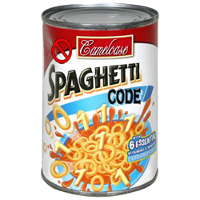
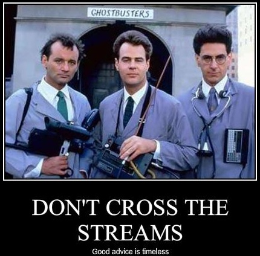
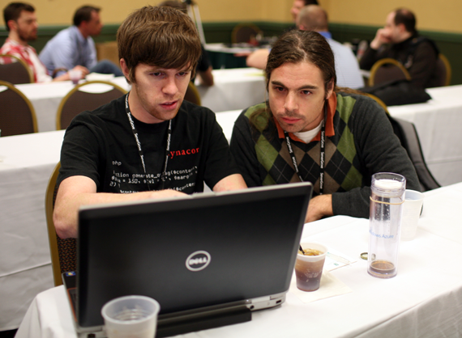

I Co/Wrote These

</ShamelessPlug>
Publications section of http://matthewturland.com
</ShamelessPlug>
finally::classforeachGenerators provide an easy way to implement simple iterators without the overhead or complexity of implementing a class that implements the Iterator interface.~ http://php.net/manual/en/language.generators.overview.php
PDOStatement::fetch() versus PDOStatement::fetchAll()
Example lifted from the Generators RFC
file()Example also lifted from the Generators RFC
(Hint: You should probably read this thing.)
Coroutines are like generators in reverse: they consume data.

finally!finally blocks are executed whenever execution of try or catch blocks terminatesfinallyExample lifted from the finally RFC
finally Worksfinally Worksfinally Worksfinally in a nutshell::classExample lifted from PHP Manual OOP Basics
Compare with namespaces in other languages
::class with PHPUnitExamples lifted from Class Name Scalars RFC
::class with Doctrine::class with Pimple::class with general PHP::class Resolutionsself::class resolves the same as __CLASS__ wouldstatic::class resolves the same as get_called_class() wouldparent::class resolves the same as get_parent_class() would; returns false if not inheritedstatic::class and parent::class will cause an exception when used in compile-time only places like method signatures::class in a NutshellUse in dynamic instantiation of classes
foreachIterator::key() was able to return any data type, but foreach didn't handle non-scalar values correctly prior to 5.5SplObjectStorage, unnecessarily complicatedExamples lifted from the Non-Scalar Keys RFC
spl_object_hash()) and fewer values to keep track of